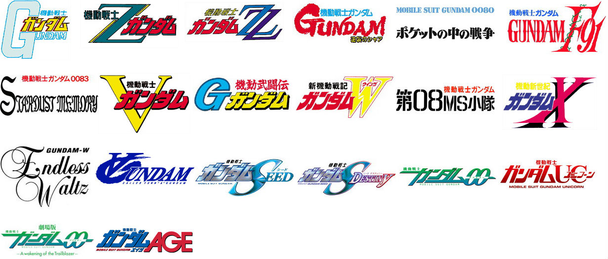

GUNDAM，ガンダム，敢达（大陆官方译名），高达（香港官方译名），钢弹（台湾官方译名），自1979年登场以来，已成为日本机器人题材卡通作品中最著名、最经久不衰、最庞大的系列 （机动战士高达0079与“宇宙战舰大和号”“新世纪福音战士EVA”并称为日本动画史上的三次高潮）。
《机动战士高达》代表了BANDAI的一系列以高达为中心的形形色色、多采多姿的动画、漫画、小说和玩具等，并以此构成了一个完整的虚拟世界。自第一部“高达”所描绘的宇宙世纪（U.C.）0079年开始，至近年推出的“高达AGE”所处的A.G.（Advanced Generation）115年，作品的时间跨度达数百年之久，而作品外的我们所生活的现实中，高达也已陪伴迷们走过了三十多个年头。《机动战士高达》曾经以自己的力量，在热血决定一切的超级系机器人世界中打出一片天，并且领导了后来真实系机器人的风潮。
《机动战士高达》系列之所以如此受人欢迎，最主要的因素在于从第一部作品中便体现出的复杂而有深度的悲剧性故事情节，这样不仅靠紧张刺激的机器人星际战争来吸引观众，而且对于追求内涵的迷家们，也有着充分的回味余地。《机动战士高达》系列一反单纯战斗的剧情，代之以写实战争，探讨在严苛的战争中少年与少女的成长、人类的希望。由于剧情结构复杂而严密，制作精美，《机动战士高达》系列受到动漫迷热烈的支持，形象和故事不断被移植到小说、漫画、模型和FC、SFC、SS、PS和PC 的游戏中。许多的漫画家和小说家都是以参加高达系列的创造而成名的，因而造就了不少高达的故事，这些作品被统称为《高达英雄故事》（Gundam·Saga）。“高达”的舞台是在广阔的宇宙，但这一幻想题材因为生动的人物刻画及事件描绘，丝毫让人不觉的空乏，那种真实的冲击力是其它作品无法比拟的。

见上图，这是各gundam荧幕作品的logo集合（没算上SD高达系列和MS IGLOO系列）。可见除了作者我选出的UC世纪的8部作品外还有别的作品，除了V高达、F91、MS IGLOO系列仍是UC世纪的世界观外，别的作品都有各自的世界观。在此我也不一一列举说明，如有兴趣自行百科。